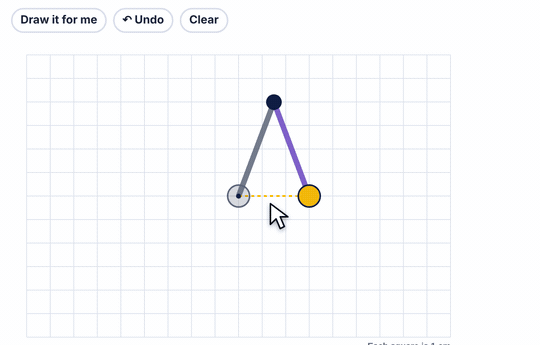

What it is
How far the compass opens is the radius. Every point on the circle is that far from the center.
Safety compasses don't have a sharp point. Most have a center piece that grips the paper and an arm marked in centimeters. Where you put the pencil on the arm sets the radius.
Drawing a circle on paper
- Set the radius: pencil in the hole you want, or line the compass up with a ruler, starting from 0.
- Hold the center down firmly with one hand.
- Turn the pencil end slowly, pressing lightly. Turning the paper instead is fine too.
How to use the tool
- Drag the gray point to where the center goes.
- Drag the yellow pencil out to open the compass.
- Drag the pencil all the way around to draw the circle.

Try this with your class
Draw a circle with a diameter of 8 cm.
- The compass sets the radius, not the diameter. Half of 8 is 4.
- Open the compass to 4 cm and draw.
- Measure straight across through the center to check: 8 cm.
Watch for
Mixing up radius and diameter.Ask: does this go to the edge, or all the way across?
Measuring from the end of the ruler.Start at 0, not at the edge of the plastic.
The circle doesn't close.The center slipped. Hold it down, or turn the paper.
Try it yourself
Based on: Sciencing, how to use a math compass · the Dimensions Math kit list.